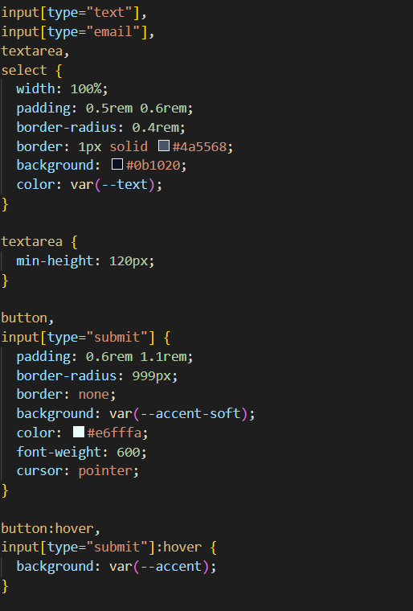
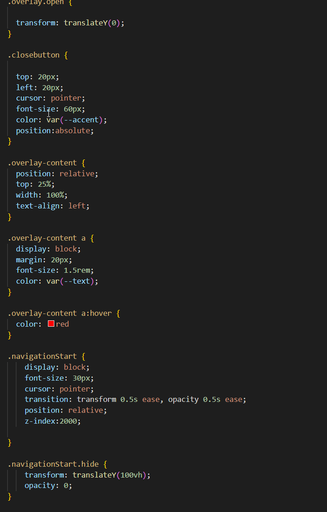
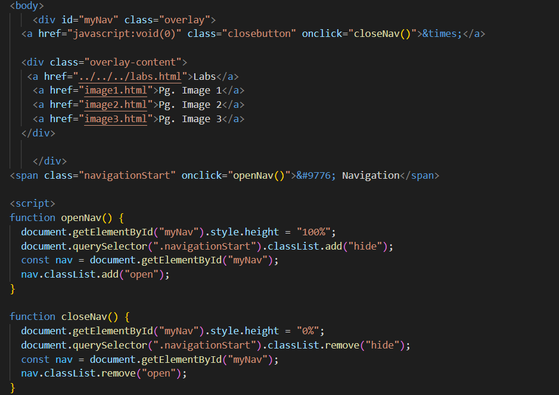

Form input (CSS)
This form styling was part of Lab 10. It demonstrates how to use CSS to create a more
visually appealing and user-friendly form. I had forgotten that forms could be styled so much
the yellow pop when hovering over the input fields looks great.

Navigation Menu (CSS)
This navigation styling was part of Lab 8. It demonstrates how to create a responsive
navigation menu that adapts to different screen sizes. I played around with making the navigation
word look like it disappeared following the popout menu.

JavaScript Interactivity
This is the other part of the navigation menu. Using JavaScript has opened up a whole new world
of ideas in my head. I beginning to not see websites as 3 columns :'D
CodeBullet YouTube Channel
A fun gaming centric coding channel
Michael Reeves YouTube Channel
Another fun gaming centric coding channel
The Coding Train YouTube Channel
A classic educational coding channel that has a lot of fun projects and tutorials.